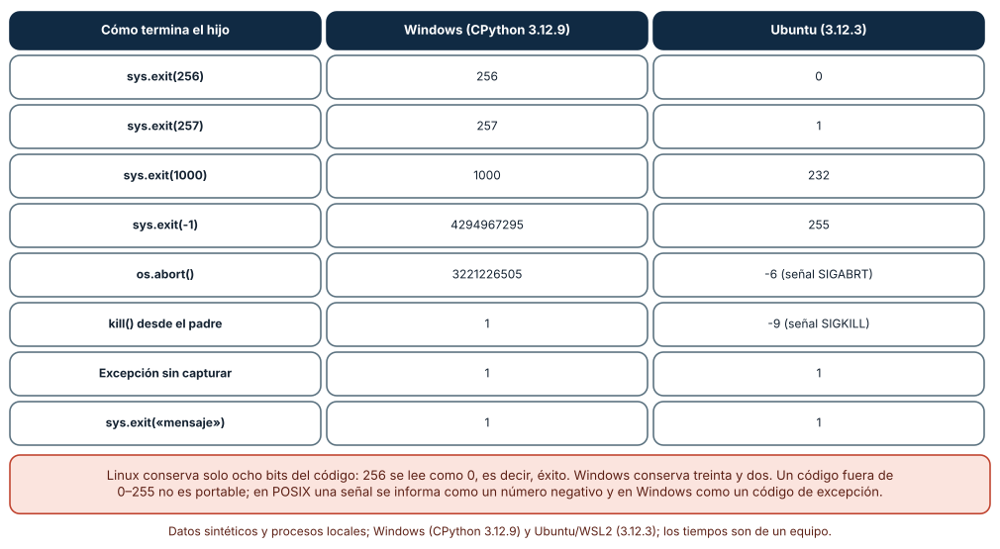
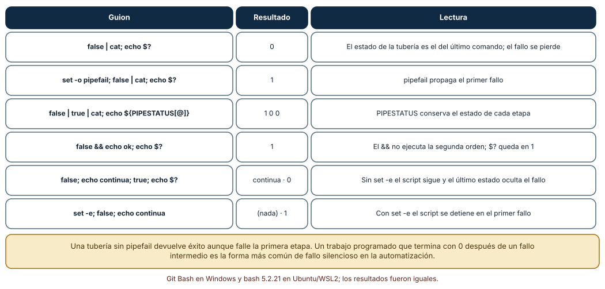
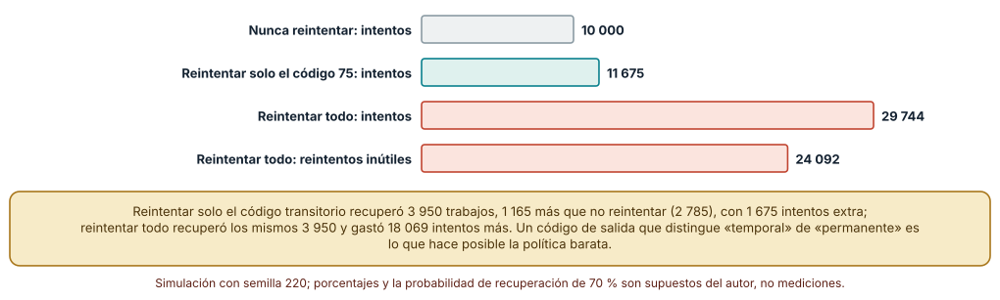

← SE-219 — Configuración, flags, archivos y precedencia · ↑ Parte 18 · 📚 Índice completo · 🌐 Portal · SE-221 — TUI, terminales y accesibilidad →
Punto profesional y fundamento pedagógico
Punto profesional. La clase existe para que lo que una herramienta dice al terminar —un número y un mensaje— permita a una persona corregir y a un programa decidir si reintenta, alerta o se detiene, sin confundir éxito con silencio ni fallo permanente con fallo temporal.
Por qué aparece aquí. Se sitúa después de Configuración, flags, archivos y precedencia (SE-219) y antes de TUI, terminales y accesibilidad (SE-221): SE-219 dejó errores de configuración con una fuente; esta clase les da un código y un diagnóstico, y deja una tabla de códigos de notas que SE-223 y SE-224 usarán para decidir reintentos y reanudaciones.
Error conceptual que debe corregir. Creer que «un código distinto de cero significa que falló» y «cero significa que salió bien». El código es un número de ocho bits (en Linux) con una convención débil; una tubería sin cuidado devuelve el estado de la última etapa; un código fuera de rango se trunca; y el mensaje no es el contrato.
Secuencia de aprendizaje. Antes de leer la solución, predices qué código ve el padre cuando el hijo sale con 256, con −1 o aborta, qué devuelve false | cat y cuántos intentos gasta una política que reintenta todo; después lo mides en Windows y en Ubuntu. La secuencia usa predicción, explicación propia, contraste y recuperación. ICAP distingue participación de construcción de conocimiento; How People Learn II exige conectar conocimiento previo, contexto y transferencia; la práctica de recuperación respalda producir de nuevo la explicación tras una demora; y Education for Life and Work exige devolución que explique la causa del error.
Evidencia de aprendizaje. exit-codes-log.md con la tabla de códigos de notas, las tres mediciones (códigos observados por sistema, estados de tubería, política de reintentos) y el diagnóstico de un fallo controlado. Debe contener predicción previa, observación, explicación causal, contraejemplo y qué hallazgo haría cambiar un código.
Límite de la conclusión. Los códigos se midieron con CPython y con bash; los trabajos y las probabilidades de la simulación (40 % transitorios, 70 % de recuperación) son supuestos del autor, no datos de un sistema; no se midió ningún planificador ni orquestador real.
Trazabilidad fuente → afirmación
| Fuente primaria u oficial | Afirmación que respalda | Lo que no prueba |
|---|---|---|
| POSIX: estado de salida de órdenes | Define el estado de salida de una tubería y de una lista de órdenes, y que 0 indica éxito. | No fija qué significa cada código distinto de cero. |
| sysexits(3) | Propone nombres y valores para códigos como uso incorrecto (64), datos inválidos (65) y fallo temporal (75). | Es una convención de BSD, no un estándar universal. |
Python: sys.exit | Documenta que un entero es el código de salida y que un valor no entero se imprime en stderr con código 1. | No describe el recorte que hace cada sistema. |
| Bash: The Set Builtin | Describe set -e y la opción pipefail. | No resume las excepciones de set -e. |
Microsoft: ExitProcess | Define el código de salida de un proceso en Windows como un valor de 32 bits. | No explica cómo lo interpretan los lenguajes. |
Antes de empezar
Recupera lo aprendido en SE-219: un error de configuración debe decir de qué fuente vino. La pregunta activa es: ¿qué decide quien lee el código de salida y qué información necesita para decidirlo bien?
Prerrequisitos
- Haber completado
SE-219o poder explicar cómonotasresuelve la configuración. - Python 3.11 o posterior; bash (Git Bash en Windows o WSL2) para la parte de tuberías.
- Trabajar con la herramienta
notasy trabajos sintéticos.
Problema auténtico
El guion nocturno de la plataforma de entregas ejecuta notas exportar | gzip > notas.gz y avisa al equipo si el código no es cero. Una noche notas falló por datos inválidos y el correo nunca salió: el estado de la tubería fue el de gzip. Otro día, un reintento automático repitió 24 veces un trabajo cuyo archivo de entrada no existía. Y una función devolvió 256 como código de error y el guion lo leyó como éxito en Linux.
Objetivos observables
Al terminar podrás:
- diseñar una tabla de códigos de salida y distinguir fallos de uso, de datos, temporales y permanentes;
- predecir qué código observa el padre en Windows y en Linux para valores fuera de 0–255 y para procesos terminados por señal;
- propagar el fallo de cada etapa de una tubería o de un guion de shell;
- diseñar mensajes de error con causa, contexto y acción posible, sin datos sensibles;
- decidir una política de reintentos a partir de los códigos y medir su coste.
Mapa conceptual
flowchart LR
H[Herramienta] -->|código| P[Padre]
H -->|mensaje en stderr| X[Persona]
P -->|0| OK[Continuar]
P -->|temporal| R[Reintentar]
P -->|uso o datos| A[Alertar]
P -->|señal| S[Investigar]El mapa se lee como un reparto de decisiones: el código llega al padre y decide qué hacer; el mensaje llega a la persona y decide cómo corregir. No describe un orden de ejecución.
Temas y por qué importan
| Tema | Por qué cambia una decisión profesional | Evidencia mínima |
|---|---|---|
| Convención de códigos | Un vocabulario común permite automatizar sin leer mensajes. | Predicción, traza causal y contraejemplo de Convención en exit-codes-log.md |
| Portabilidad del código | Windows y Linux no recortan igual; una señal no es un número positivo. | Predicción, traza causal y contraejemplo de Portabilidad en exit-codes-log.md |
| Tuberías y guiones | El estado de una tubería puede ocultar el fallo de una etapa. | Predicción, traza causal y contraejemplo de Tuberías en exit-codes-log.md |
| Mensajes de error | Un buen mensaje evita una consulta y no filtra datos. | Predicción, traza causal y contraejemplo de Mensajes en exit-codes-log.md |
| Reintentos | Reintentar lo permanente gasta recursos y retrasa el aviso. | Predicción, traza causal y contraejemplo de Reintentos en exit-codes-log.md |
Conceptos y decisiones
1. Un vocabulario pequeño de códigos
El código 0 es éxito en todos los sistemas; el resto es convención. Un vocabulario mínimo y estable suele bastar: 0 éxito; 1 fallo genérico; 2 uso incorrecto (la convención de muchos analizadores); 65 datos de entrada inválidos; 73 conflicto al crear la salida; 75 fallo temporal que puede reintentarse. Los valores 64–78 vienen de sysexits.h, una convención de BSD que no es obligatoria, pero que ofrece nombres que ya existen. Lo decisivo es que cada código signifique una decisión distinta para quien lo lee: ¿reintento, aviso, corrección o abandono? Un código que no cambia ninguna decisión no hace falta.
2. Rango, truncado y señales
En Linux, el código de salida que ve el padre ocupa ocho bits: exit(256) se lee como 0 (éxito), exit(257) como 1 y exit(-1) como 255. En Windows el código es de treinta y dos bits y se conserva; exit(-1) se lee como 4 294 967 295. Cuando un proceso muere por una señal, Python en Linux informa un número negativo (−9 para SIGKILL, −6 para SIGABRT), mientras que un shell informa 128 + n (137, 134). En Windows no hay señales en ese sentido: un aborto devuelve un código de excepción (0xC0000409, 3 221 226 505) y una terminación forzada devuelve el valor que eligió quien la pidió. La consecuencia de diseño: usar solo 0–125, no devolver nunca una expresión sin acotar y documentar que una terminación por señal no es un código.
3. Las tuberías ocultan fallos
El estado de una tubería es, por defecto, el de la última orden. false | cat devuelve 0. Bash ofrece set -o pipefail (el estado es el del último comando que falló) y la variable PIPESTATUS (el estado de cada etapa). set -e detiene el guion en el primer fallo, con excepciones sutiles (condiciones de if, listas con &&/||). La regla práctica: un guion que automatiza debe activar pipefail, comprobar el estado de las etapas críticas y fallar de forma ruidosa. En Python, subprocess obliga a mirar el código de cada proceso; una tubería construida a mano necesita leer el de cada etapa.
4. El mensaje es para la persona
Un buen mensaje de error contesta tres preguntas: qué falló, por qué (la causa conocida) y qué hacer (la acción). «Error: nota fuera de rango» es peor que «línea 7: la nota 180 está fuera de 0–100; corrige el archivo o usa --ignorar-invalidas». Va a stderr, sin trazas por defecto (con una opción de depuración que las muestre), sin colores si no es un terminal, sin datos personales de las filas y con el mismo idioma que la ayuda. El código acompaña al mensaje pero no lo sustituye: el padre lee el código; la persona, el mensaje. Quien escribe un guion no debe depender de una frase.
5. Reintentar es una decisión de diseño
Reintentar un fallo transitorio (un tiempo de espera, un recurso ocupado) suele funcionar; reintentar uno permanente (un archivo que no existe, un dato inválido) gasta recursos y retrasa el aviso. La herramienta es quien mejor sabe cuál es cuál, y el código es el canal para decirlo: un código «temporal» (75) invita a reintentar; los demás, no. Un padre que reintenta todo con un código genérico consume intentos y puede agravar un problema (más carga sobre un servicio caído). Reintentar con espera creciente y límite, y registrar cada intento, es lo mínimo. SE-222 y SE-223 retoman la espera creciente.
Lo que el padre ve: la misma salida, dos números
Trece formas de terminar un proceso hijo, vistas desde el padre con subprocess. sys.exit(0), 1, 2 y 255 dieron lo mismo en los dos sistemas. sys.exit(256) devolvió 256 en Windows y 0 en Ubuntu; 257, 257 y 1; 1000, 1000 y 232; -1, 4 294 967 295 y 255. os.abort() devolvió 3 221 226 505 en Windows y −6 en Ubuntu; terminar al hijo con kill() devolvió 1 y −9. Una excepción sin capturar y sys.exit('mensaje') devolvieron 1 en ambos.
r = subprocess.run([sys.executable, "-c", "import sys; sys.exit(256)"])
print(r.returncode) # Windows: 256 · Ubuntu: 0 (¡éxito!)
Cómo leer la figura. Cada fila es una forma de terminar; las dos últimas columnas son lo que lee el padre en cada sistema. Dónde deja de valer: son los resultados de un intérprete concreto; otro lenguaje, un shell intermedio o un contenedor pueden traducir los códigos de otra manera (un shell convierte una señal en 128 + n). El hallazgo transferible es que un código fuera de 0–125 no es portable.
Tuberías y guiones: seis casos de bash
Seis guiones de bash, con los mismos resultados en Git Bash (Windows) y en bash 5.2.21 (Ubuntu): false | cat; echo $? imprimió 0 —el fallo desapareció—; con set -o pipefail, 1; false | true | cat con PIPESTATUS, 1 0 0; false && echo ok; echo $?, 1; sin set -e, false; echo continua; true; echo $? imprimió «continua» y 0; con set -e, false; echo continua no imprimió nada y salió con 1.

Cómo leer la figura. Cada fila es un guion y su resultado; la última columna explica qué mecanismo produjo ese resultado. Dónde deja de valer: se probó bash 5.2; otros shells (sh, PowerShell, cmd) tienen reglas distintas, y set -e tiene excepciones que estos seis casos no cubren.
El coste de reintentarlo todo
Una simulación con 10 000 trabajos y cinco tipos de fallo (40 % temporales, 15 % de uso, 20 % de datos, 10 % de conflicto y 15 % internos); un trabajo temporal se recupera con probabilidad 0,7 en cada intento y los demás nunca. Tres políticas con un máximo de 4 intentos: nunca reintentar recuperó 2 785 trabajos con 10 000 intentos; reintentar solo el código 75 recuperó 3 950 con 11 675 intentos y ningún reintento inútil; reintentar todo recuperó los mismos 3 950 con 29 744 intentos, de los que 24 092 fueron reintentos inútiles sobre fallos permanentes.

Cómo leer la figura. Las barras son intentos totales; la coral final aisla los reintentos que no podían tener éxito. Dónde deja de valer: los porcentajes y la probabilidad de recuperación son supuestos del autor; con otra mezcla las cifras cambian, pero el mecanismo no: sin un código que distinga lo temporal, la única forma de recuperar lo recuperable es reintentar lo irrecuperable.
Definiciones de trabajo
- código de salida: entero con que un proceso informa al padre cómo terminó; 0 es éxito por convención.
- fallo temporal: fallo que puede desaparecer si se repite más tarde sin cambiar la entrada.
- fallo permanente: fallo que se repetirá igual mientras no cambien la entrada o el entorno.
- estado de una tubería: valor de salida de una tubería, por defecto el de su última etapa.
- mensaje accionable: mensaje que dice qué falló, por qué y qué hacer.
Las definiciones son operativas para la herramienta notas. No convierten términos con historia más amplia en sinónimos y deben contrastarse con la documentación primaria enlazada al final.
Ejemplo mínimo
El fragmento muestra la pérdida del fallo en una tubería. Antes de ejecutarlo, predice los dos números.
false | cat; echo "sin pipefail: $?"
set -o pipefail; false | cat; echo "con pipefail: $?"Debería imprimir 0 y 1. Repite con true | false y con PIPESTATUS; registra la versión de bash y la salida.
Ejemplo profesional
notas documenta cinco códigos: 0 éxito; 2 uso incorrecto; 65 datos inválidos (con número de línea); 73 no se pudo crear la salida; 75 fallo temporal (recurso ocupado, tiempo de espera). Nunca devuelve un valor mayor que 125. Los mensajes van a stderr, en una línea, con la causa y la acción; la opción --debug añade la traza. El guion nocturno activa set -euo pipefail, comprueba cada etapa con PIPESTATUS cuando hay una tubería y reintenta solo ante el código 75, con tres intentos y espera creciente. Una prueba de contrato ejecuta la herramienta con una entrada por cada código y falla si alguno devuelve otro.
Compara el caso normal con un archivo inexistente, una nota inválida y un directorio de salida bloqueado. El diseño es apropiado cuando los tres producen códigos distintos con acciones distintas; es peligroso cuando los tres devuelven 1 y el único modo de distinguirlos es leer el mensaje.
Práctica guiada
- Escribe la tabla de códigos de
notascon la decisión que habilita cada uno. - Predice el código que verá el padre para diez formas de terminar un hijo; mídelo en cada sistema.
- Ejecuta los seis guiones de bash y registra cuáles pierden el fallo.
- Reescribe el guion nocturno con
pipefaily comprobación de etapas. - Escribe tres mensajes de error con causa, contexto y acción, sin datos de las filas.
- Simula 10 000 trabajos con tres políticas de reintento y registra intentos útiles e inútiles.
- Pide a otra persona que deduzca qué hacer ante cada código solo desde
exit-codes-log.md.
Ejercicios
- Código 256: escribe una función
salir(n)que garantice que el código esté entre 0 y 125 y falle de forma ruidosa si recibe otro valor; pruébala en los dos sistemas. - Etapas: convierte
notas exportar | gzip > notas.gzen un guion que falle si cualquiera de las dos etapas falla y que conserve el código de la primera. - Mensaje: reescribe «Error: formato» para cuatro causas distintas y decide cuál va a stderr, cuál se registra y cuál necesita
--debug. - Política: con una mezcla de 10 % temporales y 90 % permanentes, calcula cómo cambia el coste de «reintentar todo» y qué ocurre con el valor de distinguir.
Reto verificable
Entrega exit-codes-log.md con la tabla de códigos, la medición de trece formas de terminar, los seis guiones de bash y la simulación de reintentos con su semilla (220). Se aprueba si otra persona ejecuta el código desde un checkout limpio, obtiene las mismas cifras de la simulación (2 785, 3 950, 11 675 y 29 744) y los mismos números de la tabla de códigos en su sistema, y puede señalar qué código no es portable. No se aprueba por el número de códigos ni por mensajes extensos.
Caso conductor
La herramienta notas es el caso conductor de la Parte 18. Esta clase deja su tabla de códigos, el manejo de tuberías en su guion nocturno y una política de reintentos. SE-221 pasará de los códigos a la interfaz que ve una persona en un terminal, y SE-222 a los procesos de larga vida que mueren y se reinician. Cambia después un solo detalle, el código de «datos inválidos» de 65 a 1, y revisa qué decisiones del guion dependían de la distinción.
Preguntas frecuentes
¿Por qué no basta con devolver 1 para todo error?
Porque quien lee el código no puede decidir: reintentar un fallo permanente es inútil y no reintentar uno temporal pierde trabajo. Distinguir cuesta una tabla de cinco filas.
¿Se puede devolver cualquier número del 0 al 255?
En Linux sí, pero algunos tienen significados reservados en shells (126, 127, 128+n). Elegir entre 1 y 125 evita confusiones.
¿Los códigos de sysexits son obligatorios?
No. Son un vocabulario ya existente que ahorra inventar nombres. Si se adoptan, se documentan; si no, se define una tabla propia con la misma disciplina.
¿Un try/except global que imprime «error» y sale con 1 es suficiente?
Es mejor que una traza y peor que una clasificación: pierde la causa y, con ella, la decisión de reintentar. Una clasificación mínima de excepciones esperadas en códigos distintos añade pocas líneas.
Fallo controlado y diagnóstico
Reproduce el fallo clásico de la clase: un fallo que desaparece en una tubería. Usa notas exportar archivo-inexistente | gzip > salida.gz sin pipefail.
Registra síntoma, entrada mínima, hipótesis, observación que descarta cada hipótesis, causa, corrección y prueba de regresión. Síntoma: el guion termina con 0 y salida.gz está vacío. Hipótesis rivales: (a) gzip falló al escribir; (b) la herramienta no leyó el archivo; (c) el estado de la tubería es el de gzip. Prueba: ejecutar la primera etapa sola devuelve 65 con el mensaje esperado; con PIPESTATUS se ve 65 0. Conclusión: la causa es la tercera. Regresión: activar pipefail, comprobar PIPESTATUS y añadir una prueba que alimente una entrada inexistente y exija un código distinto de 0. No cambies a la vez el guion y la herramienta.
Errores comunes y cómo corregirlos
| Síntoma | Causa probable | Corrección |
|---|---|---|
| El guion termina con 0 tras un fallo intermedio | El estado de la tubería es el de la última etapa | set -o pipefail y PIPESTATUS |
| El código 256 se lee como éxito en Linux | Se devolvió un valor fuera de 0–255 | Limitar a 0–125 y comprobar el rango |
| El reintento repite un fallo permanente | Todos los errores devuelven el mismo código | Distinguir un código temporal del resto |
| El mensaje filtra datos de una fila | Se interpoló la fila completa | Mencionar línea y columna, no el contenido |
| El guion depende de una frase del error | El mensaje se trató como contrato | Documentar códigos y probarlos |
Entorno y archivos clave
work/SE-220/
├── README.md
├── codigos.md
├── experimentos/
│ ├── codigos_por_sistema.py
│ ├── tuberias.sh
│ └── reintentos.py
└── evidence/exit-codes-log.mdEl README declara plataforma, versiones de Python y de bash, semilla (220) y comandos. Los experimentos usan solo la biblioteca estándar y bash (Git Bash en Windows, bash 5.2.21 en Ubuntu bajo WSL2) y se ejecutaron con CPython 3.12.9 y 3.12.3: la simulación y las tuberías fueron idénticas; los códigos fuera de 0–255 y los de señales difirieron por sistema, que es el resultado.
Seguridad, ética y accesibilidad
- un mensaje de error no debe incluir secretos, rutas internas ni contenido de filas: terminan en registros de CI y en tickets;
- un código «éxito» después de un fallo parcial es un riesgo de integridad: declara qué significa éxito parcial o no lo permitas;
- los reintentos automáticos sobre servicios ajenos deben tener límite y espera creciente para no agravar una caída;
- los mensajes deben poder leerse sin color y por un lector de pantalla: una línea, sin símbolos decorativos;
- respeta las convenciones que adoptes y atribuye las fuentes (
sysexits) en la documentación.
Puente hacia el trabajo con agentes
Un agente al que se le pide «haz que el script falle si algo va mal» suele añadir set -e y un try/except que imprime y sale con 1, sin pipefail, sin distinguir causas y sin documentar los códigos. Pídele la tabla de códigos con la decisión de cada uno, que active pipefail, que pruebe cada código con una entrada y que evite devolver valores fuera de 0–125. Revisa especialmente si trató todo error como reintentable y si el mensaje incluye contenido de la entrada.
Transferencia
Traslada el experimento a otra herramienta (por ejemplo, un cliente de copias que usa un planificador): diseña su tabla de cinco códigos, mide qué ve el planificador ante cada uno y decide qué política de reintento corresponde. La transferencia está lograda cuando puedes explicar qué parte de la tabla dependía del dominio y cuál era una convención general, no cuando los números se parecen.
Evaluación y evidencia
| Criterio | Evidencia para aprobar |
|---|---|
| comprensión | explicación de por qué un código fuera de rango no es portable |
| corrección | tabla reproducible de códigos por sistema y de estados de tubería |
| diseño | tabla de códigos con la decisión de cada uno y mensajes accionables |
| diagnóstico | reproducción del fallo «fallo oculto en tubería» con regresión |
| incertidumbre | declaración de qué supuestos tiene la simulación de reintentos |
| reproducibilidad | versiones, semilla, comandos y límites declarados |
Fuentes
- POSIX: Shell Command Language — estado de salida de órdenes y tuberías; autoridad: The Open Group.
- sysexits(3) — vocabulario de códigos 64–78; autoridad: proyecto FreeBSD.
- Python:
sys.exit— código de salida de un proceso Python; autoridad: documentación de Python. - Bash: The Set Builtin —
set -eypipefail; autoridad: proyecto GNU. - Microsoft:
ExitProcess— código de salida en Windows; autoridad: Microsoft Learn. - Command Line Interface Guidelines — mensajes de error y códigos de salida; autoridad: guía de autores.
Cada fuente respalda el mecanismo indicado; ninguna demuestra que la tabla de notas sea la adecuada para un planificador concreto. Esa afirmación depende de quién lee los códigos.
- Python:
subprocess—returncodeobservado por el padre. - Python:
random— semilla de la simulación.
Límites y siguiente paso
Se ejecutaron tres experimentos en Windows y Ubuntu (WSL2) con resultados idénticos salvo los códigos fuera de 0–255 y los de señales. Los porcentajes de fallo, la probabilidad de recuperación y el máximo de intentos son supuestos del autor; no se midió ningún planificador, ni PowerShell ni cmd. La siguiente clase pasa de la salida de un proceso a la interfaz que una persona usa en un terminal.
Glosario
- código de salida: entero con que un proceso informa al padre cómo terminó; 0 es éxito por convención.
- fallo temporal: fallo que puede desaparecer si se repite más tarde sin cambiar la entrada.
- fallo permanente: fallo que se repetirá igual mientras no cambien la entrada o el entorno.
- estado de una tubería: valor de salida de una tubería, por defecto el de su última etapa.
- mensaje accionable: mensaje que dice qué falló, por qué y qué hacer.
← SE-219 — Configuración, flags, archivos y precedencia · ↑ Parte 18 · 📚 Índice completo · 🌐 Portal · SE-221 — TUI, terminales y accesibilidad →